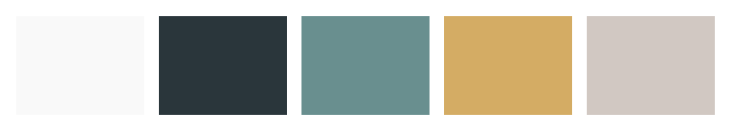
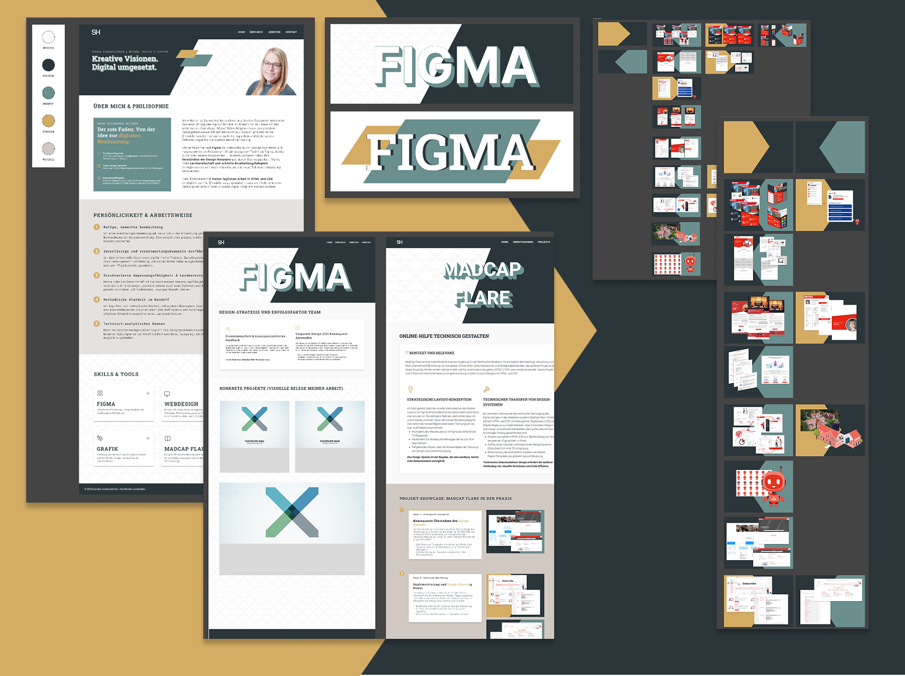

Expertise & Evolution: Der Weg zum Projekt
Visual Branding & UI-Konzeption
Dieses Projekt entstand aus einem ganzheitlichen Design-Ansatz. Ich habe die gesamte
visuelle Identität – von der Logoentwicklung über die Farbdramaturgie bis hin zur Typografie
– eigenständig konzipiert. In Figma wurden diese Elemente zu einem harmonischen System
vereint, das die Basis für das spätere Interface bildete.
- Branding: Eigenentwicklung von Logo und Corporate Identity
- Design-System: Definition von Farbwelten und Schriftschnitten
- UI-Planning: Erstellung hochauflösender Prototypen in Figma
Technische Realisierung & Backend-Einstieg
Die Umsetzung forderte mich heraus, meine Frontend-Expertise um moderne Toolchains zu
erweitern. Neben einer präzisen SCSS-Architektur lag das Haupt-Learning im Einstieg in die
Backend-Welt: Der Aufbau einer Node.js-Umgebung und das Paketmanagement via npm waren
wertvolle neue Erfahrungen.
- Modularität: 7 Jahre SCSS-Erfahrung in sauberer Datei-Logik
- Backend-Einstieg: Setup von Node.js-Umgebungen & npm
- Entwicklung: Strukturierte Versionierung via Git & GitHub
Projekt-Showcase: Vom Konzept zum Code
1
Phase 1: Exploration
Designfindung & Identität
Am Anfang stand die Suche nach einer visuellen Sprache, die Seriosität mit einem
modernen, handwerklichen Look verbindet. In dieser Phase habe ich Moodboards erstellt
und Farbwelten getestet, um eine Balance zwischen technischer Präzision und ästhetischer
Wärme zu finden.
Der Fokus lag darauf, ein System zu entwickeln, das sich über alle Berührungspunkte
hinweg konsistent anfühlt. Jede Entscheidung für eine Schriftart oder ein Farbelement
war ein bewusster Schritt hin zu einem harmonischen Gesamtbild.
- Definition von Typografie, Abständen und Farbcodes.
- Ausarbeitung von Custom-Layouts für Header und Navigation.
- Sicherstellung der Responsivität bereits in der Planungsphase.

2
Phase 2: Struktur
Prototyping & UX-Logik
Im Figma-Board wurde aus der Idee ein greifbares System. Hier habe ich die modularen
Bausteine – wie die schwebenden Karten und die versetzten Schatten – als
wiederverwendbare Komponenten definiert, um die Design-Kontinuität sicherzustellen.
Das Prototyping erlaubte es, Interaktionen und Abstände unter realen Bedingungen zu
testen. Durch die konsequente Verwendung von Komponenten konnte ich sicherstellen, dass
die visuelle Logik im gesamten Projekt fehlerfrei bleibt.

Konzeption In Figma (Klicken zum Vergrößern)
3
Phase 3: Realisierung
Technische Umsetzung
Der finale Schritt war der Transfer des Designs in einen sauberen, performanten Code.
Hierbei lag die Herausforderung darin, die feinen Details – wie die
Glassmorphism-Effekte und das präzise Raster – eins zu eins im Frontend abzubilden. Die
technische Umsetzung ist für mich die Vollendung des Designs: Sie macht die Vision für
den Nutzer zugänglich und erlebbar

Technische Umsetzung der Online Hilfe und Tools (Klicken zum Vergrößern)